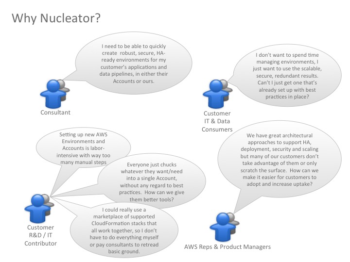
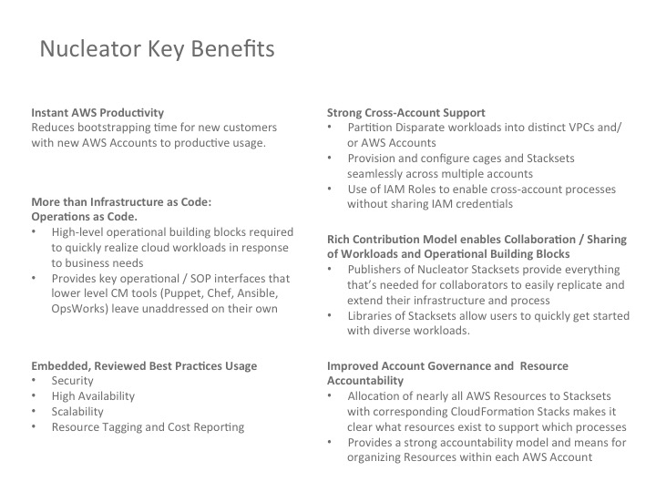

Nucleator Overview
What is Nucleator?
Nucleator is a devops framework that provides for the creation of secure, scalable, highly available environments in Amazon Web Services (AWS), into which reusable stacks of components can be deployed to address common Cloud usage scenarios. Each Nucleator Stackset implements an AWS Reference Architecture, and provides for provisioning, configuration, and operations. Nucleator uses Ansible to orchestrate provisioning and configuration activities.
Nucleator makes it easy to partition environments across multiple AWS accounts and to leverage a supported and maintained set of CloudFormation stacks that work together to allow users to focus on their core problems. It can be used to rapidly implement common scenarios in brand new AWS Accounts so that customers new to AWS can get started quickly while leveraging accumulated best practices.
Nucleator provides an extensible model for Stackset contributions from both public and private communities. To maintain Cloud security best practices, Nucleator Stacksets define the IAM Roles that they require, and Nucleator provides support for easy creation of these IAM Roles within your AWS Account. Git is leveraged extensively for community-oriented distributed development, versioning and release management of Stacksets.
The Nucleator Community is encouraged to contribute Community Stacksets, which are then incorporated into the Nucleator distribution.
Nucleator Benefits
Nucleator automates basic work that forms the basis of a best-practices implementation. We believe it’s an easy way to create a good getting started layer for many projects in AWS. The diagram below illustrates how Nucleator can benefit customers, consultants and AWS team members:

The diagram below describes key Nucleator benefits and differentiators.

Nucleator Use Model
Using Nucleator
Customers who procure and manage their own AWS Accounts can use Nucleator to launch CloudFormation stacks within their Account to provide a get-started approach at the beginning of a software development and deployment project, or to establish a secure place for analytics work to occur.
Nucleator Usage Overview
- Create a new AWS Account and use the AWS Management Console to perform minimal Account configuration using Nucleator conventions.
- Add Customer and AWS Account Information to your customer configuration in Nucleator.
- Use Nucleator to list IAM Roles that will be required by Nucleator Stacksets for your review, and to provision those Roles within your Account(s).
- Use Nucleator to set up your AWS Account to be used by Nucleator. Nucleator uses automation and the Roles in the prior step to do this.
- Use Nucleator to create the first Cage (e.g., customer
47lining's"build"Cage). - Use Nucleator to provision and configure a Stackset to a specified cage for a specified customer (e.g., add Stackset
"builder"to cage"build"for customer"47lining").